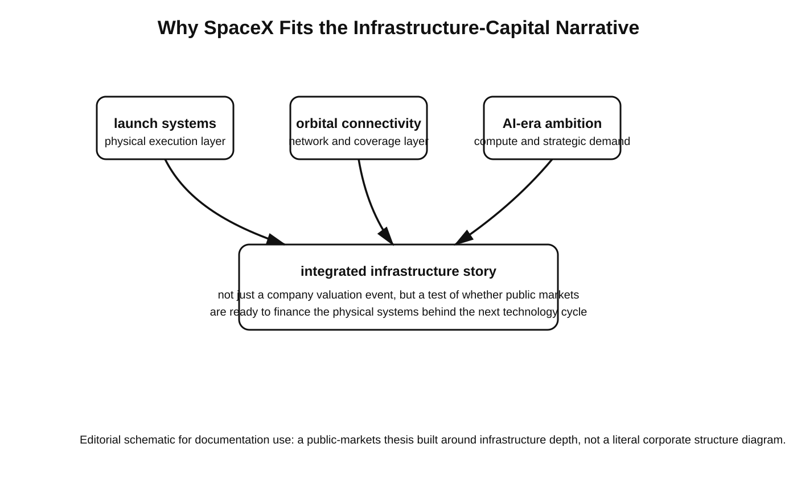

SpaceX, Confidential IPO Filing, and the Return of the Mega-Listing
Source asciidoc: `docs/article/zz-spacex-confidential-ipo-return-of-the-mega-listing.adoc` image::spacex-mega-ipo-scale.svg[Mega IPO as a market-depth test,align=center,width=100%]
Editorial illustration: a schematic view of why a mega-listing can test market depth rather than simply add one more ticker to the calendar.
According to Reuters and other major financial outlets, SpaceX has confidentially filed for a U.S. initial public offering, with reporting pointing to a possible June 2026 timetable, an indicative valuation reaching roughly $1.5 trillion to $1.75 trillion, and proceeds that could exceed $50 billion. If those parameters hold, the deal would not simply join the list of very large IPOs; it could become the largest public offering in market history.
The obvious way to read that headline is as a company story: Elon Musk, rockets, Starlink, artificial intelligence, and a market narrative powerful enough to attract both institutional and retail demand. But that interpretation is too narrow. The more consequential reading is that a SpaceX IPO would test whether public investors have truly reopened the door to capital-intensive, strategically important technology platforms after several years in which the market largely preferred lighter, faster, and easier-to-model software stories.
That is why this filing matters beyond SpaceX itself. Reuters reported that global equity capital markets raised about $211 billion in the first quarter of 2026, up roughly 40% year over year, while IPO proceeds rose to about $44 billion, up 47%. In the United States alone, Reuters said first-quarter IPO issuance reached around $23 billion, approximately 91% above the level of a year earlier. In plain terms, the issuance window is open again. The remaining question is whether it is open wide enough for a transaction on the scale now associated with SpaceX.
That question goes directly to market depth. A deal marketed at $50 billion to $75 billion would not just measure investor appetite for one issuer; it would measure the system’s ability to absorb a transaction so large that it can reshape the tone of an entire IPO calendar. Reuters has explicitly framed SpaceX as a potential “make-or-break” test for the market’s capacity to handle mega-listings. If the offering succeeds, it would validate the argument that public equity investors are again willing to fund industrial-scale growth. If it struggles, the damage would extend well beyond one ticker.
The confidential nature of the filing is central to the story. The U.S. Securities and Exchange Commission permits issuers to submit draft registration statements for nonpublic review. Under the SEC’s published procedures, the public filing must appear at least 15 days before a road show, or at least 15 days before the requested effective date when there is no road show. That structure lets a company work through regulatory comments before exposing its full disclosure package to the broader market. In practice, it reduces early reputational and execution risk while preserving the formal public-disclosure phase closer to launch.
For investors and commentators, however, confidential filing creates a familiar tension: expectations rise before complete transparency arrives. That is exactly the position the market appears to be in now. SpaceX is already being discussed using the language of record-setting valuation and record-setting proceeds, while the deeper public view into the company’s financial profile, governance architecture, and final deal design remains ahead, not behind.
This would matter less if SpaceX were a conventional aerospace issuer. It is not. Reuters’ reporting presents the company as a business that now sits at the intersection of launch systems, satellite communications, AI ambition, and prospective orbital data infrastructure. The reported uses of proceeds include Starship expansion, orbital AI-related data-center development, and lunar-program support. That combination changes the valuation logic. Investors would not be underwriting only a rocket manufacturer. They would be pricing a layered infrastructure platform with exposure to launch, broadband connectivity, dual-use capability, and future compute architecture.

Editorial illustration: SpaceX as a layered infrastructure story rather than a single-category issuer.
This is the deeper reason why the deal fits the 2026 market moment. The current cycle is increasingly rewarding companies perceived as owners of essential systems rather than merely fast-growing applications. SpaceX combines physical assets, engineering depth, state relevance, and narrative power in a way that very few private companies can match. Its investment case reaches across aerospace, telecom, AI, defense-adjacent capability, and long-horizon industrial policy. For public markets, that is a rare mix: a company that can be pitched simultaneously as a growth story, an infrastructure story, and a strategic-capability story.
The historical comparison to Saudi Aramco is useful for scale, but only up to a point. Aramco’s 2019 IPO, commonly cited at $29.4 billion with the greenshoe option, became the defining public offering of the energy era. If SpaceX were to raise capital near the upper end of the range currently being discussed, it would exceed that record and set a new benchmark. Yet the more important change would be symbolic. Aramco represented the monetization of massive physical energy capacity through public markets. SpaceX would represent the monetization of next-cycle strategic infrastructure: launch systems, orbital connectivity, AI-adjacent compute ambitions, and capabilities with direct national and geopolitical significance.
That distinction is important because public markets do not merely price companies; they also reveal what the era values most. A giant energy listing says something about the structure of the world that produced it. A giant infrastructure-and-space listing says something different. It suggests that investors may now believe the next durable premium lies not only in software interfaces, but in the underlying systems on which future software, networks, and machine intelligence will depend.
Of course, none of this removes the risks. It amplifies them. The valuation now associated with SpaceX is immense even by mega-cap standards. When financial disclosures arrive publicly, investors will look hard at governance, control, capital allocation discipline, execution complexity, and the relationship between visionary long-horizon projects and nearer-term economic performance. A company can be strategically important and still prove difficult to value with precision.
There is also a market-structure risk. A transaction this large could confirm the reopening of the IPO market, but it could also consume liquidity and attention that might otherwise support other issuers. In that scenario, SpaceX would prove its own exceptional gravity without necessarily proving broad market health.
That is why this potential listing matters so much now. The market does not need another ordinary float to define 2026. It needs a transaction large enough, complex enough, and strategically important enough to show whether the issuance rebound is truly robust. SpaceX appears to be exactly that transaction. If it proceeds on terms close to those now being reported, the offering will say as much about investor appetite for the next era of infrastructure as it does about one company’s ascent.
In that sense, the real significance of a SpaceX IPO is not that a famous private company may finally come public. The larger significance is that public markets may once again be prepared to finance the physical systems behind the next technology cycle. That would mark a major shift. For years, the premium narrative in technology investing centered on asset-light software and scalable digital platforms. SpaceX points in another direction: toward capital-heavy, execution-heavy, strategically critical systems. If the market embraces that proposition at record scale, the message will be unmistakable. The age of the mega-listing will not simply be back. It will have evolved.
Sources
-
Reuters, April 1, 2026: “SpaceX files for IPO, sources say, offering investors a stake in Musk’s moon, Mars ambitions.”
-
Reuters, April 1, 2026: “SpaceX lines up 21 banks for mega IPO, code-named project Apex.”
-
Reuters, April 1, 2026: “Mega-IPOs set to test U.S. market depth despite volatility.”
-
Reuters, April 1, 2026: “SpaceX seen as make-or-break test for mega-IPOs.”
-
U.S. Securities and Exchange Commission: “Enhanced accommodations for issuers submitting draft registration statements for nonpublic review.”
-
U.S. Securities and Exchange Commission: “Voluntary Submission of Draft Registration Statements - FAQs.”
-
Reuters, January 12, 2020: “Saudi Aramco raises IPO to record $29.4 billion by over-allotment of shares.”